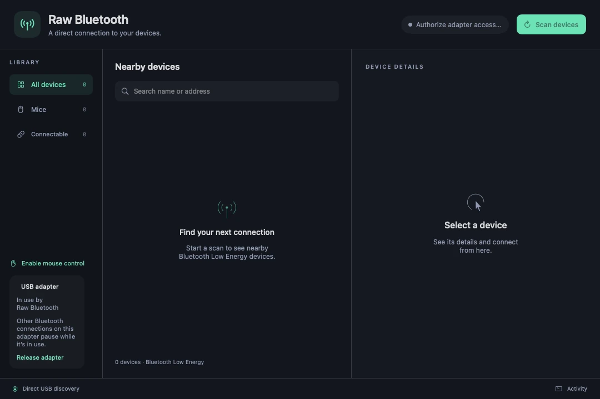

macOS · USB HCI · SwiftUI
Raw Bluetooth
An experimental userspace driver that uses an external USB Bluetooth adapter and Google Bumble to connect keyboards and mice to macOS. A SwiftUI app handles scanning, pairing, and saved devices.
Why I built it
I wanted to use Bluetooth keyboards and mice with an external USB adapter through a dedicated macOS app.
How input reaches macOS
- The app talks to the external adapter over USB HCI.
- Google Bumble discovers and pairs Bluetooth Low Energy devices.
- The driver decodes HID reports and forwards keyboard and mouse events to macOS.
Technical decisions and limitations
A userspace approach allows experimentation with the Bluetooth stack and a dedicated interface. It also requires explicit device support and input forwarding; this is not a replacement for every macOS Bluetooth capability.
Test setup
I tested a CSR USB adapter (0a12:0001), a Logitech M196 mouse, and a Logitech K250 keyboard on Intel macOS. Keyboard and mouse input worked on that setup. Audio remains experimental, and compatibility depends on the adapter and peripherals.
